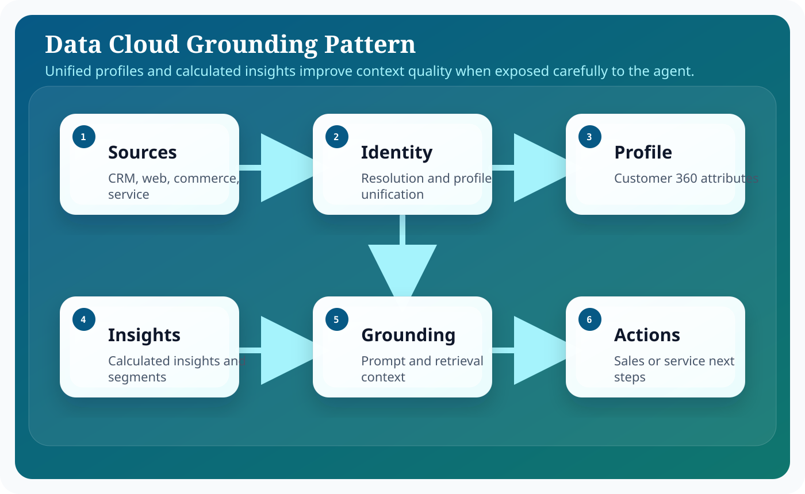
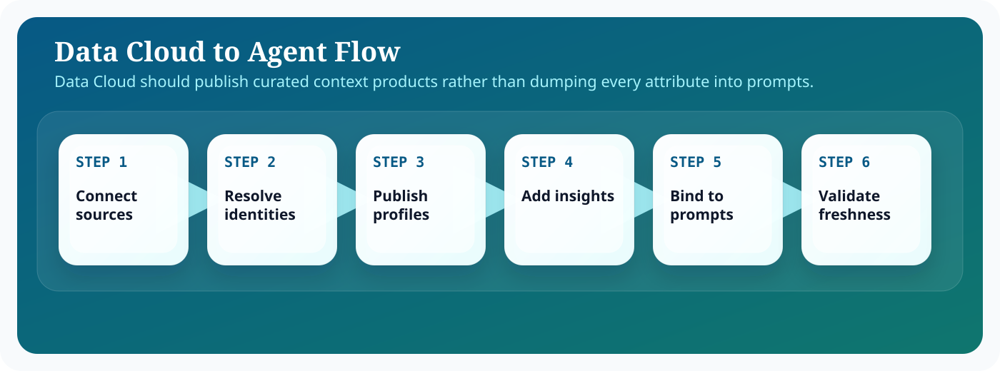

Introduction
Salesforce Agentforce matters because enterprise teams do not need another isolated chatbot; they need an execution surface that can reason over business context, stay inside platform controls, and complete work across Salesforce workflows. In practical terms, that means combining language understanding with CRM records, metadata, automation, and operational policy. The most useful framing is to treat Agentforce as an orchestration layer sitting between human intent and governed business actions.
For architects, admins, and developers, the design question is not whether an LLM can produce fluent output. The harder question is how you bound that output with trusted data, deterministic automations, explicit approvals, and observability. This guide focuses on the implementation tradeoffs, runtime boundaries, and delivery decisions that shape data cloud work in Agentforce. That is why successful Agentforce implementations start from architecture, identity, and process design before they focus on polished conversational experiences.
A strong Data Cloud implementation usually follows the same pattern: define the business objective, identify the records and actions the agent can use, design prompts that encode policy and tone, expose actions through Flow or Apex, and then measure outcomes with operational telemetry. This pattern keeps the solution explainable and creates a handoff model that admins, architects, developers, and service leaders can all understand.
Architecture explanation
Data Cloud changes the architecture by improving context quality. Instead of retrieving isolated CRM objects, the agent can reason over a more complete profile that includes unified identities, events, calculated insights, and segments.
Data Cloud strengthens Agentforce by giving the agent access to unified profiles, segments, and calculated insights instead of only local object views. The right pattern is to expose a curated profile story to the agent so it can reason with richer business context while operational writes still happen through governed platform actions.
Using Agentforce with Data Cloud works best when the architecture separates conversational intent from deterministic execution. Topics and instructions tell the agent what kind of work it is doing. Grounding layers bring in trusted business facts from Salesforce data, knowledge, Data Cloud, or external systems. Actions then convert the plan into platform work through Flow, Apex, or governed API calls. Trust controls wrap the entire path so data access, generated output, and side effects remain observable and policy-bound.

These layers are useful because they help teams decide where a problem belongs. If the answer is wrong, the issue may sit in grounding. If the action is unsafe, the problem sits in permissions or execution validation. If the result is verbose or inconsistent, the issue is often in prompting or output schema. Separating the architecture this way keeps debugging concrete, which is essential when an implementation grows across multiple teams.
In enterprise delivery, it also helps to think about control planes versus data planes. The control plane contains metadata, prompts, access policy, model selection, testing, and release procedures. The data plane contains the live customer conversation, retrieved records, outbound actions, and operational telemetry. This distinction prevents teams from mixing authoring concerns with runtime concerns and makes promotion across sandboxes significantly easier.
The most reliable Agentforce implementations keep the model responsible for reasoning and language, while deterministic platform services remain responsible for data integrity, approvals, and side effects.
Step-by-step configuration
Configuration work succeeds when the team treats Agentforce setup as a sequence of platform decisions rather than a single wizard. The steps below reflect the order that keeps dependencies visible and avoids rework later in the release.

The value of Data Cloud comes from curation, not volume. The workflow below focuses on resolution, published profile attributes, and validated freshness before those signals are allowed to shape agent decisions.
- Define the customer and account use cases that benefit from unified profile context rather than isolated CRM records.
- Map source systems into Data Cloud and confirm identity resolution rules are stable enough for production use.
- Publish the calculated insights, segments, or profile attributes the agent needs for grounding.
- Reference those data products in prompts or actions with clear explanations of freshness and intended use.
- Test how the agent behaves when profile data is incomplete, conflicting, or delayed.
- Document where operational actions still happen inside core Salesforce objects even when context comes from Data Cloud.
- Measure whether richer context improves conversion, service quality, or analyst productivity enough to justify the added complexity.
Data Cloud grounding works best when the profile story is easy to explain. If an agent recommends an offer or a next action, the delivery team should be able to trace that recommendation back to a specific segment membership, calculated insight, or profile attribute.
Code examples
Enterprise teams need concrete implementation patterns because agent behavior eventually resolves into platform metadata and code. With Data Cloud, the key is not dumping more data into the model. The examples show how to pass curated profile signals and explain freshness constraints.
Grounding profile payload example
{
"unifiedIndividualId": "UID-10294",
"profileSummary": {
"lifetimeValue": 148000,
"renewalPropensity": 0.84,
"productAdoptionScore": 73,
"serviceTier": "Premier"
},
"segments": [
"high-expansion-potential",
"renewal-in-next-90-days"
],
"freshness": {
"profileLastUpdated": "2026-03-10T18:05:00Z",
"usageAggregationWindow": "7d"
}
}Prompt binding example
Use the unified profile only for context and recommendation quality.
Customer profile:
{!DataCloud.ProfileSummary}
Calculated insights:
{!DataCloud.Insights}
Rules:
- explain recommendations using profile evidence
- do not expose hidden segment labels to customers
- if freshness is older than 24 hours, mention that data may be delayedOperating model and delivery guidance
Agentforce projects become easier to sustain when the delivery model is explicit. Administrators typically own prompt authoring, channel setup, and low-code automations. Developers own custom actions, advanced integrations, and test harnesses. Architects own the capability boundary, trust assumptions, and release model. Service or sales operations leaders own business acceptance and the definition of success.
That separation matters because long-term quality depends on ownership. If everyone can tune everything, nobody can explain why behavior changed. If prompts, flows, and actions are versioned with release notes, then a regression can be traced back to a concrete modification. This is the same discipline teams already apply to code; Agentforce just expands the surface area that needs that discipline.
It is also useful to define an evidence loop. Capture representative transcripts, measure action success rate, compare containment against downstream business metrics, and review edge cases at a fixed cadence. Over time, this evidence loop becomes more valuable than intuition. It tells you whether a prompt change improved quality, whether a new action reduced manual effort, and whether an escalation rule is too sensitive or too lax.
Teams should also decide how documentation, enablement, and support ownership work after launch. A static runbook for incident handling, a changelog for prompt revisions, and a named owner for every high-impact action are simple controls that prevent ambiguity when the agent starts operating at scale.
Best practices
- Publish only the profile attributes that materially improve decisions.
- Document freshness expectations for each context element.
- Handle identity ambiguity explicitly in prompts.
- Keep operational writes in systems with clear ownership.
- Watch for cost and latency growth as more datasets are added.
Conclusion
Data Cloud gives Agentforce better memory, better segmentation, and a more complete business picture, but only when the context is curated intentionally. Ground the agent on high-value profile attributes, keep the explanation path clear, and continue executing operational changes through governed platform services. That is how richer context becomes better outcomes.
For Salesforce teams, the practical lesson is consistent: start from business flow, ground the model on trusted enterprise context, expose only the actions you can govern, and measure what the agent actually changes in production. That is how Agentforce becomes a durable platform capability instead of a short-lived proof of concept.